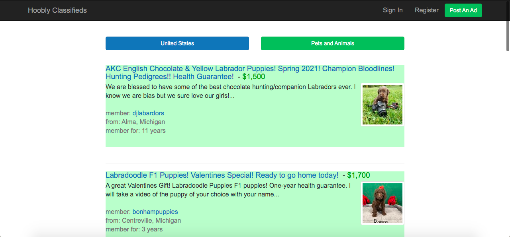
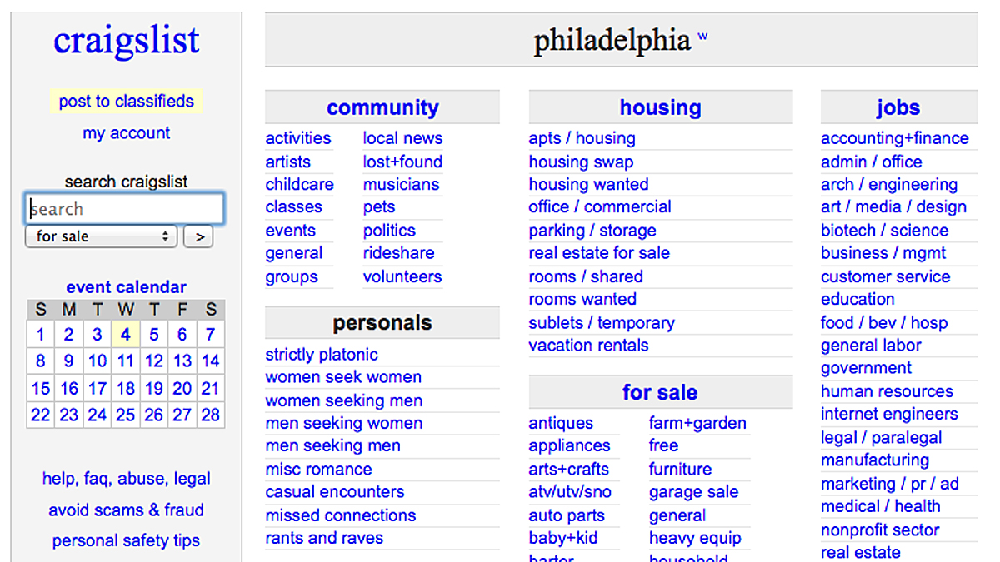

I recommend puppyfind.com as the top dog searching site. Puppyfind.com is different from petfinder.com, so please don't confuse the two. Although don't get me wrong petfinder.com is a great pet rescue site. Puppyfind.com is a great site, because it practically has zero scams.
Hoobly.com is probably the second best dog searching site. It does have more scams a bit more scams than puppyfind.com, unfortunately you can't be completely free from scams. It does require you to register with them to be able to contact someone, but it is free.
Craigslist.com is an a good site if you are on a low budget. The downside of Craigslist.com is that there are a lot of scams, but most of the scams are pretty easy to spot. You first go under community and then you will see pets.
